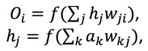
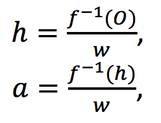
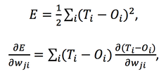
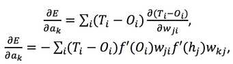
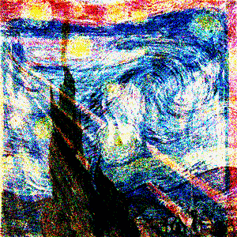

Sample image used in MNIST dataset for transfer learning
Synthesis of Starry Night and the Scream by Reverse Neural Net

The Reverse Neural Network is a network that can return back inputs. In the example of computer vision, where inputs represent pixels and outputs are categorizations of pictures and scenes, the reverse neural network can return back whole images based on the selected categorization. The concept involves training inputs rather than training weights and is coded in Java from scratch.
The reverse neural network project was a result of my interest and progression in vanilla neural networks. I built a multilayer perceptron with a logistic activation function and back propagation in Java from scratch and initially formatted the network to accept binaries, grayscale images, and then color images. I was thinking that it would be really cool if I could implement some sort of creativity into the network because I wanted to think past neural nets as a universal function approximator. To be honest, I really just wanted to create cool images. Retrospectively, I think I need to use that sort of driving motivation and thinking to solve problems and implement psychological and neurological concepts as computational structures and algorithms. I started thinking of ways to reverse back inputs. I knew that I would first have to train a network and store weights. The nodes of a simple multilayer perceptron can be defined as follows:
where f(x) is the activation function, O is output activation, h is hidden activation, w is weight, and a is input. K is number of input node, j is #hidden node, and i is #output node. I tried to think of ways to achieve a perfect solution and somehow calculate the inputs from the weights. With the simplest base case of 1 input node, 1 hidden node, and 1 output node, it is possible to back-calculate the inputs given the weights and desired outputs by using the inverse of the activation function:
where f^-1 is the inverse. However, this method will only work for this simplest case. As there are more hidden nodes and inputs, the nodes could have various solutions or in fact, infinite. I tried to think of some way to collate various equations in the networks like all the equations of hidden nodes to outputs in order to solve the values for hidden nodes and then inputs. A scalable possibility, is an network with n input node, n hidden nodes, and n output nodes. As such, a matrix of equations can be solved using row reduction (hopefully none are linearly dependent) and the inputs can be solved for. A slight problem here has to do with the large domain and small range of the activation function (which is reversed for the inverse), resulting in imaginary numbers in back-calculations. Regardless, this base case and the nxn network are unreasonable in any computer vision application where the inputs can number in the hundreds of thousands and the outputs are much fewer. I realized that it might not be reasonable to extract a perfect solution through equations I detail the solution I arrived at in the next section.
I decided to try to train the inputs of the networks similar to how networks are normally trained for weight values. The weights are trained by minimizing the error function:
where E is the error function and T is the target output activation. Taking the partial derivative of the error function with respect to the input gives:
where T and the weights are treated as constant with no dependencies on the inputs. After doing these derivations, I implemented the math to "train the inputs" in code (see Github).
For fun, I trained the network to recognize an image of The Scream by Munch and Starry Night by van Gogh as art and tried to reverse an image of what the network thought art was (Very small dataset, but just wanted to try to see if a meaningful image was returned).
You can clearly see elements from both images in the picture. I had to use background of white and black as "not art" to provide a good background control. Otherwise, the network may be more likely to achieve convergence with a few pixels that the two art images have in common.
The ability to train inputs has many applications in areas other than computer vision such as sound processing and NLP. I am excited to see its potential and possibilities, and I am also really eager to try other networks like the CNN and Turing complete recurrent neural network. I just want to dive into the field and try to innovate and apply the various ideas I run into.